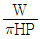
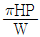
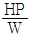
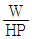
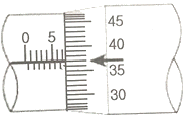
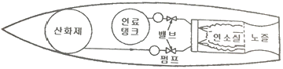
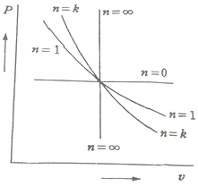

항공기관정비기능사 (2014-10-11 기출문제)
1과목: 비행원리
1. 대기권에 대한 설명으로 옳은 것은?
- 중간권과 열권의 경계를 대류권계면이라 한다.
- 성층권에서는 온도, 날씨, 기상변화가 일어난다.
- 대기권은 고도에 따라 대류권, 성층권, 중간권, 열권, 극외권으로 구분된다.
- 중간권에서는 기체가 이온화되어 전리현상이 일어나는 전리층이 존재한다.
(정답률: 93%)

2. 다음 중 밸러스 탭(balance tab)에 대한 설명으로 옳은 것은?
- 자동 비행을 가능하게 한다.
- 조종석의 조종장치와 직접 연결되어 탭만 작동시켜 조종면을 움직인다.
- 조종사가 조종석에서 임의로 탭의 위치를 조절할수 있도록 되어 있다.
- 1차 조종면과 반대 또는 같은 방향으로 움직이도록 기계적으로 연결되어 조타력을 가볍게 한다.
(정답률: 75%)
3. 헬리콥터의 전진비행시 양력의 비대칭 현상을 제거해 주는 주 회전 날개 깃의 운동을 무엇이라 하는가?
- 페더링 운동
- 플래핑 운동
- 주기 피치 운동
- 동시피치운동
(정답률: 65%)
4. 항공기 이륙성능을 향상시키기 위한 가장 적절한 바람의 방향은?
- 정풍(맞바람)
- 좌측측풍(옆바람)
- 배풍(뒷바람)
- 우측측풍(옆바람)
(정답률: 89%)
5. 충격파의 강도를 가장 옳게 나타낸 것은?
- 충격파 전ㆍ후의 속도차
- 충격파 전ㆍ후의 온도차
- 충격파 전ㆍ후의 압력차
- 충격파 전ㆍ후의 유량차
(정답률: 89%)
6. 비행기가 평형상태를 유지하기 위한 조건으로 옳은 것은?
- 양력이 비행기 무게보다 커야한다.
- 반드시 지상에 정지하고 있는 상태이어야 한다.
- 비행기 진행 방향으로 작용하는 가속도가 일정한 상태이어야 한다.
- 비행기에 작용하는 모든 힘의 합과 모멘트의 합이 각각 0(zero) 이어야 한다.
(정답률: 92%)
7. 헬리콥터의 공기역학에서 자주 사용되는 마력하중(horse power loading)을 구하는 식은?




(정답률: 61%)
8. 최대양력계수를 증가시키는 방법으로 받음각이 클 때 흐름의 떨어짐을 직접 방지하여 실속현상을 지연시켜주는 장치는?
- 스포일러
- 경계층 제어장치
- 파울러플랩
- 분할플랩(split)
(정답률: 59%)
9. 비행기에 작용하는 항력의 종류가 아닌 것은?
- 마찰항력
- 추력항력
- 유도항력
- 조파항력
(정답률: 74%)
10. 동적 세로안정의 단주기 운동 발생시 조종사가 대처해야 하는 방법으로 가장 옳은 것은?
- 조종간을 자유롭게 놓아야 한다.
- 즉시 조종간을 작동시켜야 한다.
- 받음각이 작아지도록 조작해야 한다.
- 비행 불능 상태이므로 즉시 탈출하여야 한다.
(정답률: 84%)
11. 절대상승한계는 상승률이 어떠한 고도인가?
- 0 m/s 되는 고도
- 0.5 m/s 되는 고도
- 5 m/s 되는 고도
- 50 m/s 되는 고도
(정답률: 76%)
12. 프로펠러 깃의 선속도가 300 m/s 이고, 프로펠러의 진행률이 2.2 일 때, 이프로펠러 비행기의 비행속도는 약 몇 m/s 인가?
- 210
- 240
- 270
- 310
(정답률: 49%)
13. 다음 중 음속에 가장 큰 영향을 미치는 요인은?
- 압력
- 밀도
- 공기성분구성
- 온도
(정답률: 80%)
14. 날개의 길이가 11m, 평균시위의 길이가 1.44m 인 타원형날개에서 양력계수가 0.8일 때 가로세로비는 약 얼마인가?
- 4.9
- 6.1
- 7.6
- 8.8
(정답률: 68%)
15. 무게가 2000kgf 인 항공기가 30도로 선회하는 경우 이 항공기에 발생하는 양력은 몇 kgf 인가?
- 1000
- 1732
- 2309
- 4000
(정답률: 62%)
16. 다이얼 게이지의 용도로 옳은 것은?
- 원통의 진원상태 측정
- 원통의 안지름, 바깥지름, 깊이 등을 측정
- 지시계기의 기준을 설정하고 가공상태를 측정
- 정확한 피치의 나사를 이용하여 실제 길이를 측정
(정답률: 70%)
17. 항공기가 지상활주 시 타이어의 과도한 온도상승을 방지할수 있는 좋은 방법이 아닌 것은?
- 빠른 지상활주
- 적절한 타이어의 압력
- 신뢰성 정비
- 오버홀 정비
(정답률: 84%)
18. 정기적인 점검과 시험을 실시하며 온-커디션 정비방식에 해당하는 정비는?
- 상태정비
- 시한성 정비
- 신뢰성 정비
- 오버홀 정비
(정답률: 67%)
19. 작업중에 반드시 접지를 하지 않아도 되는 것은?
- 항공기 시운전
- 연료의 배유작업
- 항공기 정비작업
- 연료의 급유작업
(정답률: 84%)
20. 항공기를 견인시 견인속도는 몇 mph를 넘지 않아야 하는가?
- 5
- 10
- 15
- 30
(정답률: 73%)
2과목: 항공기정비
21. 다음 중 전기적인 화재는 어느 것인가?
- A급 화재
- B급 화재
- C급 화재
- D급 화재
(정답률: 90%)
22. 두께가 각각 1mm, 2mm 인 판을 리벳팅 하려 할 때 리벳의 직경은 약 몇 mm 가 가장 적당한가?
- 2
- 4
- 6
- 8
(정답률: 85%)
23. 다음 중 비파괴 검사의 종류에 속하지 않는 것은?
- 초음파 검사
- 누설검사
- 비커스검사
- 자분탐상검사
(정답률: 75%)
24. What's not the primary group of the control surface?
- the aileron
- the elevator
- the rudder
- the tab
(정답률: 80%)
25. 정시 점검으로 제한된 범위 내에서 구조, 모든 계통 및 장비품의 작동 점검, 계획된 부품의 교환, 서비스 등을 실시하는 점검은?
- A 점검
- B 점검
- C 점검
- D 점검
(정답률: 54%)
26. 다음 중 부식성이 높은 환경에서 사용이 가장 적절한 안전결선 재료는?
- 열처리 한 것
- 아연도금을 한 것
- 내식강 또는 모넬로 만들어진 것
- 일반적인 안전결선에 부식방지 처리한 것
(정답률: 67%)
27. 비행장에 설치된 시설물, 장비 및 각종 기기 등에 색채를 이용하여 작업자로 하여금 사고를 미연에 방지할수 있도록 하는데 청색의 안전색채가 의미하는 것은?
- 방사능 유출위험이 있는 것을 의미한다.
- 수리 및 조절 검사중인 장비를 의미한다.
- 기계 또는 저닉 설비의 위험 위치를 의미한다.
- 충돌, 추락, 전복 등의 위험 장비를 의미한다.
(정답률: 84%)
28. 공장정비의 작업 순서가 옳게 나열된 것은?
- 검사-분해-세척-수리-조립-시험/조정-보존 및 방부
- 분해-검사-세척-수리-조립-시험/조정-보존 및 방부
- 수리-세척-검사-분해-조립-시험/조정-보존 및 방부
- 분해-세척-검사-수리-조립-시험/조정-보존 및 방부
(정답률: 80%)
29. 그림과 같은 최소 눈금 1/1000 in 식 마이크로미터의 눈금은 몇 in 인가?

- 0.215
- 0.737
- 2.116
- 2.411
(정답률: 87%)
30. 두개 이상의 굴곡이 교차하는 곳의 안쪽 굴곡 접선에 발생하는 응력집중으로 인한 균열을 막기위하여 뚫는 구멍은?
- grain hole
- relief hole
- sight line hole
- neutral hole
(정답률: 86%)
31. 너트의 식별기호 AN 310 D-3R에서 3은 무엇을 의미하는가?
- 나사산이 3개 있다.
- 볼트의 길이에 맞는 너트의 높이를 의미한다.
- AN 3 볼트에 맞는 너트를 말하며 즉 직경이 3/8 인치 볼트에 맞는 너트이다.
- AN 3 볼트에 맞는 너트를 말하며 즉 직경이 3/16 인치 볼트에 맞는 너트이다.
(정답률: 72%)
32. 다음 중 알루미늄에 사용되는 표면처리기법이 아닌 것은?
- 알로다이징
- 알크래딩
- 아노다이징
- 갈바니깅
(정답률: 81%)
33. 마이크로미터를 좋은 상태로 유지하고 측정값의 정확도를 높이고자 하는 방법으로 틀린 것은?
- 심블을 잡고 프레임을 돌리면 스크루가 마멸되므로 주의한다.
- 부식 방지를 위하여 마이크로미터 앤빌과 스핀들은 깨끗한 오일로 윤활하여 보관한다.
- 마이크로미터 기구에 이물질이 끼여 원활하지 못할 때는 이를 닦아낸다.
- 마이크로미터를 보관할 때 앤빌과 스핀들이 서로 맞닿지 않게 작은 간격을 유지한다.
(정답률: 70%)
34. 다음중 작업자가 왕복기관 피스톤 실린더 내부 또는 가스터빈기관 내부 압축기 깃 등 기관을 분해하지 않고 광학적인 장치의 도움을 받아 검사를 수행하는 육안 검사법은?
- 와전류 검사
- 보어스코프검사
- 방사선검사
- 초음파 검사
(정답률: 86%)
35. 금속표면에 존재하는 수분이나 오염 물질에 의해 발생되는 표면 부식의 방지 방법으로 틀린 것은?
- 세척
- 도장
- 도금
- 열처리
(정답률: 69%)
36. 가스터빈기관의 연소실 형식중 애뉼러형 연소실의 특징이 아닌 것은?
- 정비가 용이하다.
- 연소실의 길이가 짧다.
- 출구온도 분포가 균일하다.
- 연소실의 전체 표면적이 작다.
(정답률: 77%)
37. 그림과 같은 구조의 기관은?

- 로켓기관
- 터보제트기관
- 수평대향형기관
- 가스터빈기관
(정답률: 88%)
38. 다음 중 가스터빈 기관에서 바이브레이터에 의해 직류를 교류로 바꾸어 사용하는 점화장치는?
- 직류 저전압 용량형 점화장치
- 교류 저전압 용량형 점화장치
- 교류 고전압 용량형 점화장치
- 직류 고전압 용량형 점화장치
(정답률: 47%)
39. 터보제트 기고나에서 추진효율이 80%, 열효율이 60%인 경우 이 기관의 전효율(overall efficiency)은 몇% 인가
- 20
- 40
- 48
- 75
(정답률: 53%)
40. 7기통 성형기관 4-로브 캠판의 크랭크축 24회전 속도에 대한 속도(회전)로 옳은 것은?
- 1회전
- 2회전
- 3회전
- 4회전
(정답률: 63%)
3과목: 항공기관
41. 항공기관의 추력을 증가시키기 위한 물분사 장치의 원리를 옳게 설명한 것은?
- 압축기 블레이드를 세척함으로서 공기의 저항을 감소시켜 추력을 증가시킨다.
- 기관에 흐르는 공기의 질량과 밀도를 증가시킴으로서 추력을 증가시킨다.
- 터빈 배기가스의 온도를 내려줌으로서 추력을 증가시킨다.
- 기관 흡입구의 온도를 증가시킴으로서 추력을 증가시킨다.
(정답률: 61%)
42. 가스터빈기관의 주 연료 펌프의 구성으로 옳게 짝지어진 것은?
- 원심펌프, 기어펌프
- 피스톤펌프, 기어펌프
- 원심펌프, 베인펌프
- 부스터펌프, 베인펌프
(정답률: 55%)
43. 2중 스풀 압축기에서 더 높은 출력을 얻기 위해 조절하는 것은?
- 온도비
- 밀도비
- 압력비
- 바이패스비
(정답률: 67%)
44. 가스의 누설방지를 위한 피스톤링 조인트의 위치를 결정하는 방법으로 옳은 것은?
- 90° ÷ 링의수
- 180° ÷ 링의수
- 270° ÷ 링의수
- 360° ÷ 링의수
(정답률: 66%)
45. 왕복기관 연료의 옥탄값이 91/96 이라고 표시되었을 경우 96이 의미하는 것은?
- 옥탄가의 최대 범위를 의미한다.
- 농후 혼합비의 옥탄가를 의미한다.
- 96%의 노멀헵탄이 함유된 것을 의미한다.
- 기관이 고온 작동할 때의 옥탄가를 의미한다.
(정답률: 58%)
46. 다음 중 후기연소기의 기본 구성품이 아닌 것은?
- 가변면적 노즐
- 프레임 홀더
- 연료 스프레이바
- 역추력장치
(정답률: 71%)
47. 이륙이나 상승할 때와 같이 최대출력을 낼 때 카울플랩은 어떻게 하는 것이 가장 좋은가?
- 1/2 정도 열어준다.
- 1/3 정도 열어준다.
- 완전히 닫아준다.
- 완전히 열어준다.
(정답률: 74%)
48. 가스터빈기관에서 1kgf 의 추력을 발생하기 위하여 1시간 동안 소비하는 연료의 중량을 무엇이라 하는가?
- 추력중량비
- 추력효율
- 비추력효율
- 추력비연료소비율
(정답률: 68%)
49. 항공기 왕복기관에서 직접 연료 분사장치의 구성품이 아닌 것은?
- 주공기블리드
- 분사노즐
- 연료분사펌프
- 주 조정장치
(정답률: 61%)
50. 반동터빈에 대한 설명으로 틀린 것은?
- 고정자 깃의 통로는 수축통로이다.
- 회전자 깃의 통로는 수축통로이다.
- 회전자 깃의 통로는 확산통로이다.
- 반동도는 일반적으로 50% 정도이다.
(정답률: 49%)
51. 프로펠러에 조속기를 장치하여 비행고도, 비행자세의 변화에 따른 속도의 변화 및 스로틀 개폐에 관계없이 프로펠러를 항상 일정한 회전속도로 유지하여 항상 최상의 효율을 가질수 있도록 만든 프로펠러는?
- 패더링 프로펠러(fathering propeller)
- 정속 프로펠러(constant speed propeller)
- 고정피치 프로펠러(fixed pitch propeller)
- 조정피치 프로펠러(adjustable pitch propeller)
(정답률: 69%)
52. 그림과 같은 p-v 선도에서 n=1일 때의 과정에 해당되는 것은? (단, n은 폴리트로픽 지수이다.)

- 정압과정
- 정적과정
- 등온과정
- 단열과정
(정답률: 52%)
53. 항공용 왕복기관의 밸브간극은 어떤 곳에 여유를 두는 것인가?
- 푸시로드와 캠
- 로커암과 밸브팁
- 밸브시트와 갬로브
- 유압밸브리프트와 로커암
(정답률: 75%)
54. 일반적으로 가스터빈 기관의 기어박스에 부착된 구성품이 아닌 것은?
- 시동기
- 연료펌프
- 블리드밸브
- 오일펌프
(정답률: 62%)
55. 왕복기관에서 피스톤 링의 기능이 아닌 것은?
- 충격흡수
- 연료펌프
- 블리드 밸브
- 오일펌프
(정답률: 54%)
56. 가스터빈기관에서 직류 고전압 용량형 점화계통에 입력되는 직류가 필터를 거쳐 공급되는데 이 필터의 기능이 아닌 것은?
- 통신 잡음을 없앤다.
- 점화 계통으로 공급되는 직류를 잘 흐르게 한다.
- 점화 계통에 의해서 발생된 교류를 약화시킨다.
- 점화장치에 의해서 발생된 맥류를 증가시킨다.
(정답률: 44%)
57. 이상기체(완전가스)로 채워진 체적이 변하지 않는 밀폐용기를 외부에서 가열했을 때 상태량 변화는?
- 내부 압력이 증가한다.
- 기체의 체적이 증가한다.
- 내부 압력이 감소한다.
- 기체의 체적이 감소한다.
(정답률: 73%)
58. 고정형프로펠러가 장착된 항공기에서 4행정 6실린더 왕복기관의 각 실린더 연소실에서 초당 10회의 점화가 이루어졌다면 이 기관의 크랭크 샤프트의 rpm은?
- 600
- 1200
- 2400
- 3600
(정답률: 52%)
59. 마그네토 배전기 블록에 표시된 숫자의 의미는?
- 기관의 점화순서
- 마그네토 점화순서
- 점화플러그 점검순서
- 마그네토를 떼어내는 순서
(정답률: 78%)
60. 항공기 왕복기관에 사용되는 윤활유에 요구되는 특성으로 틀린 것은?
- 유성이 좋아야 한다.
- 산화에 대한 저항이 적어야 한다.
- 저온에서 최대의 유동성을 갖추어야 한다.
- 온도변화에 따른 점도의 변화가 최소이어야 한다.
(정답률: 62%)